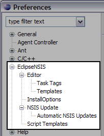

Preferences
- Introduction
- EclipseNSIS
- Editor
- Templates
- Task Tags
- Script Templates
- NSIS Update
- Automatic NSIS Updates
- Colors and Fonts
Introduction
The EclipseNSIS Preference pages can be accessed by opening the Window→Preferences menu item and navigating to the EclipseNSIS item in the Preferences dialog.

The following sections explain how to use the various Preference pages bundled with EclipseNSIS in order to customize its behavior. Wherever possible, the look & feel of standard Eclipse Preference pages has been maintained.
In each section, click on the images to get help about a particular preference setting.
Previous | Contents | Next
Copyright © 2004-2010 Sunil Kamath (IcemanK).